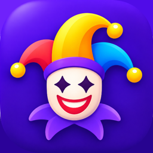
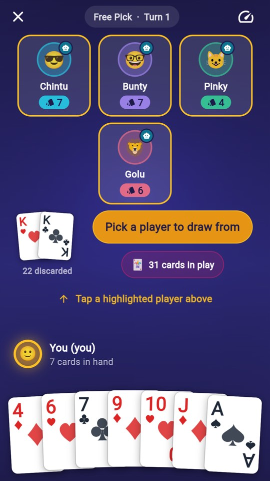
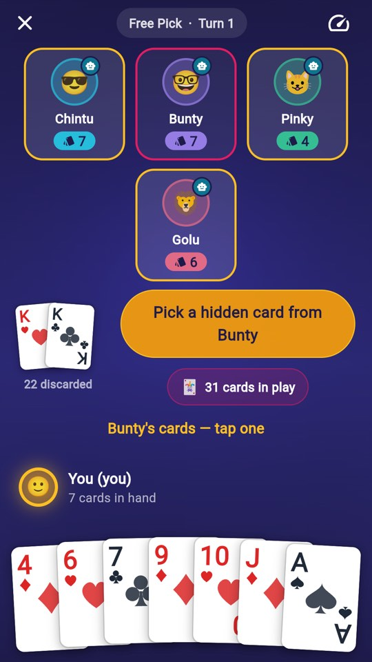
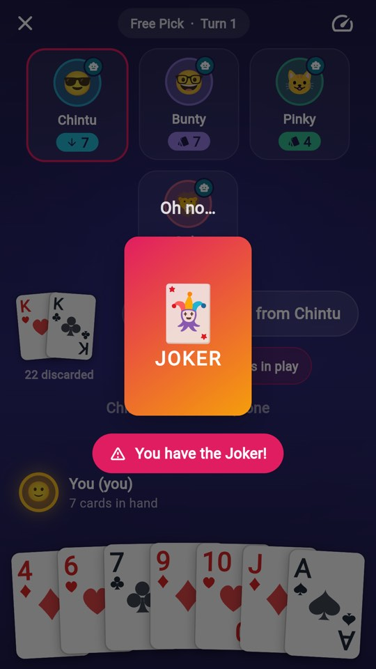
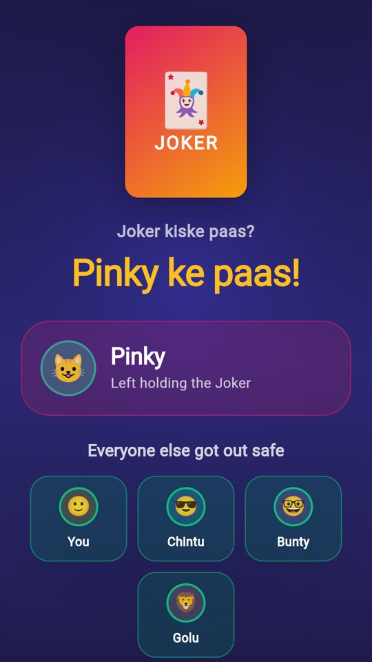

On Google Play
Pair up, pass it on — and don’t get caught holding the Joker.
It’s the card game you already know how to play. Everyone gets cards, pairs throw themselves away, and on your turn you take one face-down card from another player — hoping it isn’t the one nobody wants. Empty your hand and you’re out safe. Whoever is left holding the Joker at the end loses.
It is Old Maid: the game half the subcontinent grew up playing on the floor with a borrowed deck, built properly for a phone.
Make a private room and share the code — or send it on WhatsApp, where one tap brings your friends to the table. Wherever they are.
Pick a mode and get matched with whoever is looking for a game, with a live count of who is waiting. Smart AI bots fill any empty seats.
You against smart AI bots, any time, no connection needed. They track where the Joker probably is, weigh their odds of a pair, and see only what you see.
You draw from the next player, clockwise. Pure luck, and pure nerve.
You choose who to draw from, then which card. Suddenly it matters who looks nervous, who is down to two cards, and who you’d rather not hand the Joker to.
Free Pick, and you may keep one pair hidden. Look like a safe bet, and let them take the Joker off your hands.

Free Pick — choosing who to draw from.

Choosing one of their hidden cards.

“You have the Joker!”

“Pinky ke paas!”
Two cards of the same rank make a pair and go straight to the discard pile — automatically, as soon as you hold both. The deck has 53 cards: 52 and one Joker, so everything can pair up except the Joker.
Four to seven. Online, a table of four starts as soon as four are waiting, and AI bots fill any empty seats after a short wait.
Only for online play. Play with AI runs entirely on your phone; Play with Friends and Play Online connect to our game server.
No. The game has no in-app purchases and no advertising.
Yes. Choose Play with Friends, make a room, and share the code or send it on WhatsApp. Your friends join from wherever they are.